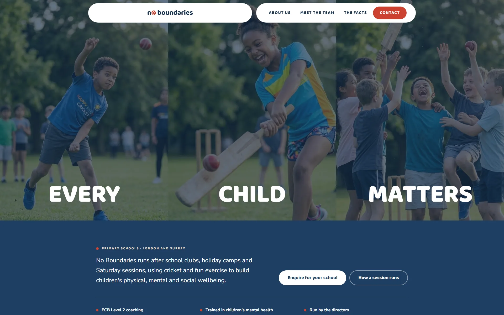
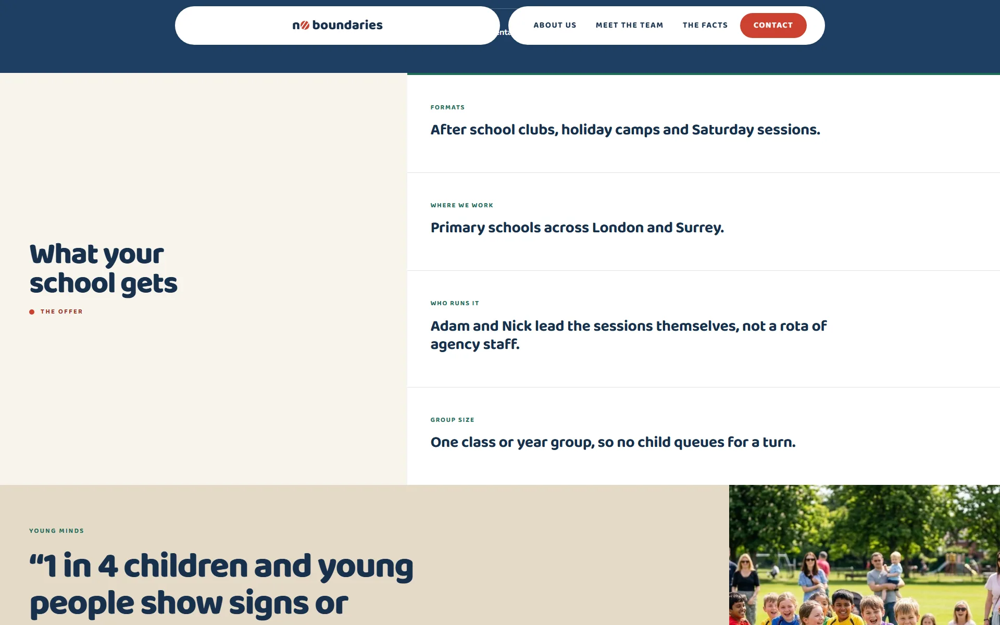
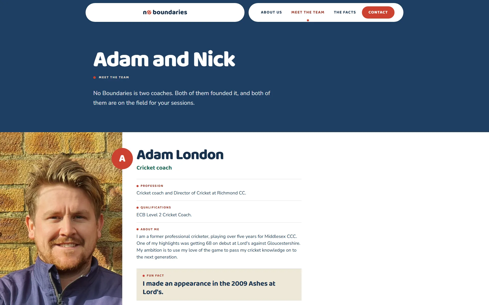
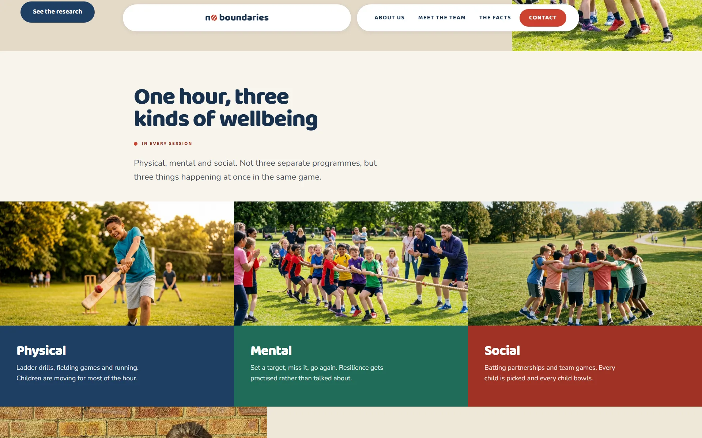
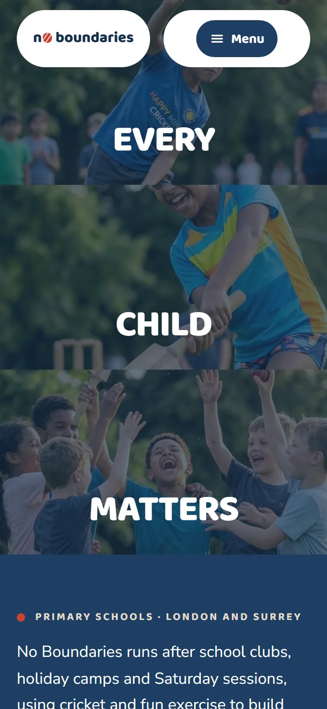
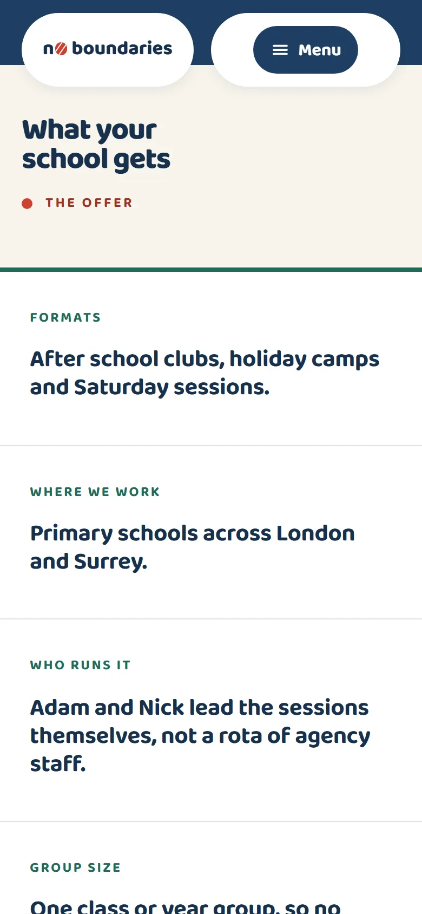
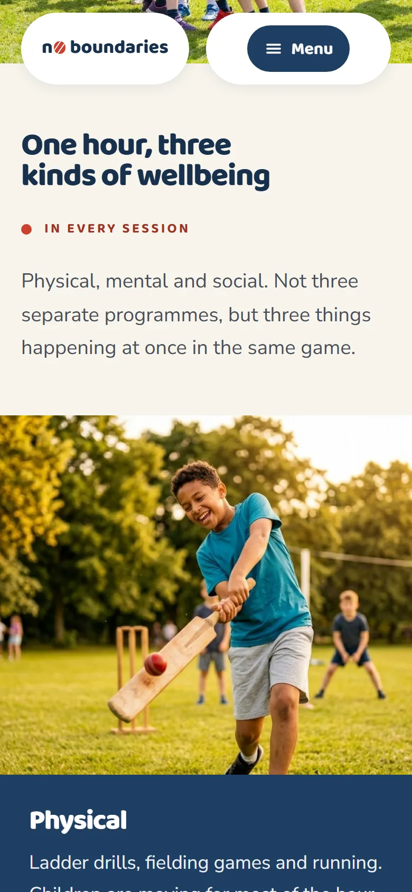

Case
No Boundaries
School wellbeing, through cricket. Primary schools across London and Surrey.
Project
No Boundaries
Design & Build
6 weeks
Web Design
Preview

Overview
The brief
“Cricket is the way in. Wellbeing is the point.” The site is written for one reader: a head teacher vetting a provider, who needs coaches, credentials and safeguarding answered above the fold.
Run by ex-Middlesex cricketer Adam London and coach Nick Hampshire. I rebuilt an old Bootstrap site from scratch, with every colour pairing contrast-checked.
The challenge
What was in the way
The old site was friendly. It wouldn’t survive a vetting call:
- Nothing read like a rigorous provider.
- Safeguarding, insurance and DBS had no home.
- Two real coaches were lost behind “our team”.
The approach
How we got there
-
A palette with the receipts
Seven colours, every pairing checked against AA. Navy and pitch green pair up. Ball red is the only accent.
-
The nav is a wicket
Two floating capsules with a gap where the middle stump would be. Cricket in the layout, never drawn.
-
Answer the vetting checklist
Safeguarding, DBS, insurance and first aid, in one plain-text block.
-
Two coaches, not a franchise
Adam and Nick, named and pictured with their credentials. “Our team” doesn’t earn trust.
On screen
The site, up close
Navy, pitch green, one red accent. Real session photos on every page.
Full page

Desktop


Pillars

Mobile



The outcome
What it delivered
A site built for the reader who matters most: a head teacher deciding whether to trust a stranger with their pupils.
Results
30+
+85%
AA
In their words
Teachers tell us the website was what convinced them. It feels like the sessions do.
Programme Lead
Status
Next
Get in touch